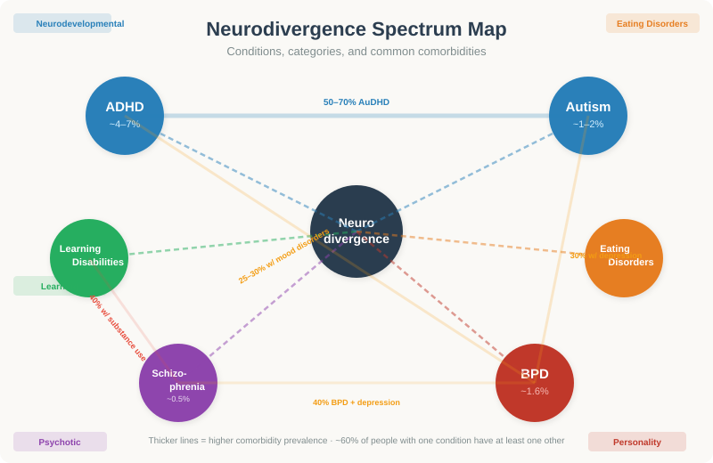
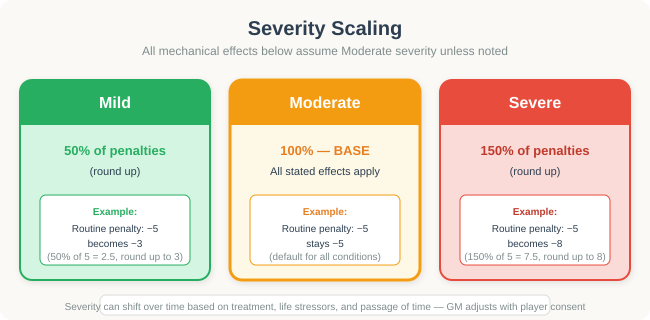
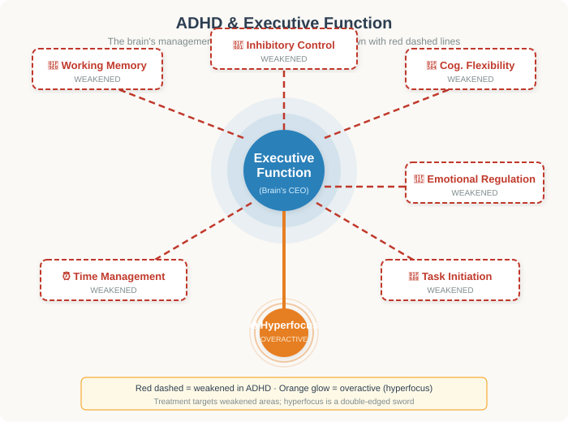
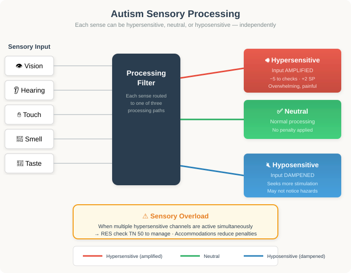
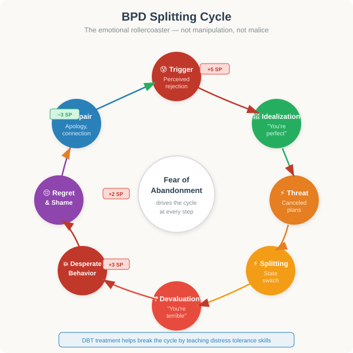
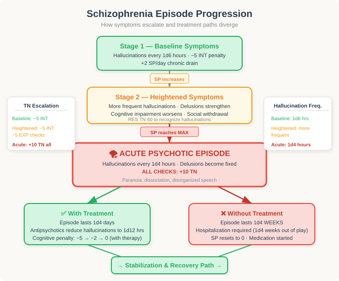
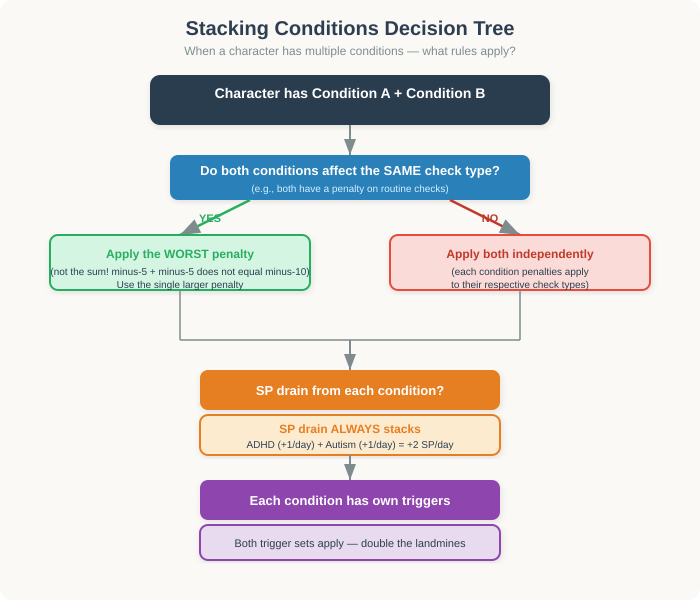

This page covers neurodevelopmental conditions, eating disorders, personality disorders, psychotic disorders, and learning disabilities. These conditions interact with the Stress Point (SP) system described on the Mental Health page. All conditions use the same dice framework: 2d10 + modifier vs. TN, and the same SP pool with max = 20 + RES mod × 5.
These conditions are real. Players may have personal experience with them or know someone who does. Never pressure a player to roleplay a condition they identify with. Use content warnings before triggering scenes. Establish a safety word (e.g., "fade to black") that any player can use to skip uncomfortable content. The GM should ask each player what topics they want out of the game before play begins.
All mechanical effects listed below assume Moderate severity unless noted. Mild = 50% of stated penalties (round up). Severe = 150% of stated penalties (round up). Severity can shift over time based on treatment adherence, life stressors, and passage of time. The GM may adjust severity between sessions with player consent.
ADHD and Autism are neurodevelopmental differences — not illnesses to be cured. Many neurodivergent people experience their differences as an integral part of identity. Mechanical treatment should reflect both the challenges and the strengths. A neurodivergent character is not "broken" — they process the world differently, and the world was not built for them.


ADHD is a neurodevelopmental condition affecting executive function — the brain's management system. It's not simply "can't pay attention"; it's inconsistent attention regulation. People with ADHD can hyperfocus intensely on things that interest them while struggling to start mundane tasks. It affects ~4–7% of adults worldwide.

Distractibility, forgetfulness, disorganization, losing things, difficulty sustaining focus on non-preferred tasks. Higher penalties on routine checks; less physical restlessness.
Fidgeting, talking excessively, interrupting, difficulty waiting, acting without thinking. Higher penalties on social patience checks; more impulsive action bonuses.
Features of both inattentive and hyperactive types. Full mechanical effects from both categories below.
| Effect | Modifier | Notes |
|---|---|---|
| 🎨 Creative / Spontaneous bonus | +5 | Checks involving creativity, improvisation, brainstorming, or novel problem-solving. ADHD brains generate connections others miss. |
| 📋 Routine / Focus penalty | −5 | Checks involving sustained attention, paperwork, data entry, following multi-step instructions, or repetitive tasks. |
| ⏰ Time blindness | Tasks take 20% longer | Any timed task (cooking, cleaning, commuting) requires 20% more time. GM may call for a RES check (TN 45) to "catch" time slipping — on failure, character is late or misses a deadline. |
| 🔥 Hyperfocus bonus | +10 | When deeply engaged in a personally interesting task, the character gains +10 to all checks related to that task. Hyperfocus lasts 1d4 hours. During hyperfocus, the character is oblivious to distractions and may neglect other responsibilities. |
| 💥 Impulsivity | GM may call for RES check (TN 50) | Before making a decision with consequences, the GM may require a RES check. On failure, the character acts impulsively — speaking out of turn, spending money, starting a fight, etc. |
| 💔 RSD emotional spike | +3 SP | When the character perceives rejection, criticism, or failure (whether real or imagined), they immediately gain +3 SP and suffer −5 on all social checks until the next daydawn. |
| 🧠 Working memory deficit | −3 on INT checks | When asked to recall information not immediately present, hold multiple pieces of information in mind, or follow verbal instructions with 3+ steps. |
| 📉 Chronic SP drain | +1 SP per day | Living with untreated ADHD in a neurotypical-optimized world generates baseline stress. |
Boredom, open-ended tasks ("do your chores"), interruptions during hyperfocus, criticism (especially public), deadlines, understimulation, sleep deprivation, hunger.
| Treatment | Mechanical Benefit | Notes |
|---|---|---|
| 💊 Stimulant medication (methylphenidate, amphetamines) | Halves all ADHD penalties; +3 to RES checks | Requires prescription; may have side effects (appetite suppression, sleep disruption). GM may call VIG check (TN 40) to manage side effects. |
| 💊 Non-stimulant medication (atomoxetine, guanfacine) | Reduces ADHD penalties by 25%; no stimulant side effects | Slower onset (2–4 weeks). Good for characters who can't tolerate stimulants. |
| 🧠 Cognitive Behavioral Therapy (CBT) | −2 SP per session; +2 to RES checks for impulse control | Teaches coping strategies. Cumulative benefit: after 6+ sessions, the −5 routine penalty becomes −3. |
| 📋 Organizational systems (planners, alarms, apps) | Eliminates time blindness penalty; reduces −5 routine to −3 | Requires setup and maintenance. If the system breaks down, penalties return fully. |
| 🤝 ADHD coaching | +2 to all EXP-based self-management checks; −1 SP/day baseline | External accountability. Particularly effective combined with medication. |
Alex (INT 11, RES 9, DXT 13) has Moderate Combined ADHD. She's trying to cook dinner — a DXT + Cooking (TN 50) check. Her base DXT mod is +2 and she has +4 Cooking skill, so her total would be 2d10 + 6. But cooking involves following a recipe (routine task), so the −5 ADHD penalty applies: her effective modifier drops to +1.
She rolls 2d10 = 38. Total: 38 + 1 = 39. TN is 50. Failure. Halfway through, she got distracted by a thought about work, forgot the rice was cooking, and now there's a burnt smell. The GM adds +3 SP for the stressful event. Alex's time blindness means she also realizes she's been cooking for 45 minutes when she budgeted 30 — she's now going to be late for her friend's visit.
However — if Alex had been hyperfocused (maybe she's making a recipe she's passionate about), she'd get +10 instead of −5, and her total would be 38 + 11 = 49. Still a failure by 1, but much closer — the GM might narrate a partial success: the meal is edible if not gourmet.
Autism is a neurodevelopmental condition affecting how people process sensory information, communicate, and interact socially. It's a spectrum — no two autistic people are the same. The term "neurodivergent" was coined in reference to autism. Prevalence is estimated at ~1–2% of the population. Many autistic adults were never diagnosed as children.

| Effect | Modifier | Notes |
|---|---|---|
| 🔊 Sensory over-sensitivity | −5 to all checks | In environments with overwhelming sensory input (bright lights, loud noises, strong smells, crowded spaces). The GM selects which senses are affected based on the character's profile. A successful RES check (TN 50) reduces this to −3. |
| 👐 Sensory under-sensitivity | May seek intense input | Character may engage in behaviors to get sensory input (spinning, rocking, touching textures). This does not directly penalize checks but may draw social attention or cause physical injury if unchecked. |
| 🤝 Social communication differences | −5 to Empathy checks | In unfamiliar social settings or with people the character doesn't know well. With trusted individuals, this penalty is reduced to −2 or eliminated entirely. |
| 🔍 Pattern recognition bonus | +5 | Checks involving identifying patterns, anomalies, details, or systematic analysis. Autistic perception often notices what others miss. |
| ⭐ Special interests | +10 to checks within special interest | When the task falls within the character's special interest area, they receive a massive bonus. The character should have 1–3 defined special interests. These interests may shift over time. |
| 🔄 Routine dependence | +3 SP | When the character's daily routine is disrupted (unexpected schedule change, unfamiliar environment, plan alteration), they immediately gain +3 SP. A successful RES check (TN 55) reduces this to +1 SP. |
| 💬 Literal interpretation | GM may rule checks misfire | Idiomatic language, sarcasm, or indirect requests may be misunderstood. The GM may narrate a social misstep when the character takes something literally in a context requiring nuance. |
| 👐 Stimming | Self-regulation tool | Repetitive movements or sounds (hand-flapping, rocking, humming) help the character regulate. If prevented from stimming (socially pressured to stop), the character gains +2 SP. |
| 🎭 Masking cost | −2 on EXP checks while masking | Many autistic people "mask" (suppress autistic traits to appear neurotypical). While masking, social checks are slightly harder, and at the end of each social interaction, the character gains +2 SP. After a day of heavy masking, an additional +3 SP. |
| 📉 Chronic SP drain | +1 SP per day | Navigating a world not designed for autistic processing generates baseline stress. |
During character creation, assign each sense a sensitivity rating. The GM uses this to determine which sensory inputs trigger penalties:
| Sense | Hypersensitive | Neutral | Hyposensitive |
|---|---|---|---|
| 👁️ Vision | Bright lights, flickering screens, busy patterns cause −5 | Normal visual processing | May squint into lights; needs brighter environments to function |
| 👂 Hearing | Background noise, multiple voices, sudden sounds cause −5 and +2 SP | Normal auditory processing | May not hear calls; seeks loud music or white noise |
| ✋ Touch | Tags, seams, certain fabrics cause distress; unwanted touch = +3 SP | Normal tactile processing | May not feel pain well; seeks deep pressure (weighted blankets help) |
| 👃 Smell | Perfume, food odors, cleaning products cause −3 and possible nausea | Normal olfactory processing | May not notice smoke, spoiled food; may sniff objects |
| 👅 Taste | Texture aversions; limited food range; gag reflex easily triggered | Normal taste processing | Seeks very spicy/sour/bitter foods; may under-eat |
Sensory overload (crowded/noisy/bright environments), unexpected changes to routine, social demands without warning, indirect communication ("maybe you should..."), being told to stop stimming, masking pressure.
| Support | Mechanical Benefit | Notes |
|---|---|---|
| 🧠 Occupational Therapy (OT) | −2 to all sensory overload penalties; −1 SP/day baseline | Builds tolerance and coping strategies. Effects accumulate over months. |
| 🎧 Sensory accommodations (noise-canceling headphones, sunglasses, fidget tools) | Eliminates specific sensory penalties when the accommodation addresses the trigger | Character should have 1–3 preferred accommodations. GM should allow these in play. |
| 🤝 Social skills therapy | Reduces Empathy penalty from −5 to −3 in unfamiliar settings | Teaches explicit social rules. Does not make the character "less autistic" — just more equipped. |
| 👥 Support groups / autistic community | −3 SP per meaningful interaction; masking cost reduced by half in safe spaces | Being around other autistic people is genuinely restorative. |
| 📋 Routine optimization | Reduces routine disruption SP from +3 to +1 | Having a predictable daily structure significantly reduces stress. |
Autistic characters should not be framed as "damaged neurotypicals." Their strengths — pattern recognition, deep expertise in special interests, honesty, systematic thinking, creative problem-solving — are real mechanical bonuses. A well-supported autistic character can excel in ways that neurotypical characters cannot. The challenge is not "being autistic" — it's "living in a world not designed for you."
Eating disorders are among the most dangerous mental health conditions, with the highest mortality rate of any psychiatric illness. They are not about vanity — they are complex biopsychological conditions involving distorted body image, compulsive behaviors, and severe physical consequences. They affect all genders, though they are more commonly diagnosed in women and girls.
Severe restriction of caloric intake, intense fear of weight gain, and distorted body image. Highest VIG deterioration risk.
Cycles of binge eating followed by compensatory behaviors. Harder to detect due to "normal" weight range.
Recurrent episodes of eating large quantities without compensatory behaviors. Distress present but no purging.
Eating disorders are life-threatening. This section should only be included in games where all players have explicitly consented to this topic. Consider handling eating disorder content off-screen — narrate the mechanical effects without describing specific behaviors in detail. Never roleplay specific restriction or binge/purge behaviors as "choices" — these are compulsive symptoms of a serious illness.
Characterized by severe restriction of caloric intake, intense fear of weight gain, and distorted body image. The person sees themselves as overweight even when dangerously underweight.
| Effect | Modifier | Notes |
|---|---|---|
| 📉 VIG deterioration | −2 per month of active disorder | VIG decreases permanently until treatment begins. At VIG below 5, the character is in medical danger. Below 3, hospitalization is required. |
| 🪞 Body image distortion | Any check involving self-assessment of appearance is automatically failed | The character cannot accurately judge their own weight/appearance. They will always believe they need to lose weight. |
| 🚪 Social withdrawal | −5 on social checks involving food or eating | Meal invitations, cooking together, food-related events are extremely stressful. Character may make excuses to avoid them. |
| 🏃 Compulsive exercise | +5 to endurance checks, −5 to self-care checks | The character can push through physical limits (dangerously) but cannot rest or care for injuries. |
| 🎭 Secretive behavior | +5 to Deception checks about eating | The character becomes skilled at hiding their condition. This is a symptom, not a choice. |
| 📉 Chronic SP drain | +3 SP per day | The constant internal conflict between the illness and the rational mind generates enormous stress. |
| 🔁 The feedback loop | Starvation → increased obsession | Paradoxically, the more the character starves, the more the eating disorder intensifies. Each month of active disorder adds +1 to the TN of any RES check to resist restriction urges. |
Characterized by cycles of binge eating followed by compensatory behaviors (self-induced vomiting, laxative abuse, excessive exercise). Unlike anorexia, weight may appear "normal" making it harder to detect.
| Effect | Modifier | Notes |
|---|---|---|
| 📊 VIG instability | −1 per month of active disorder | Slower deterioration than anorexia but still dangerous. Electrolyte imbalance can cause sudden cardiac events — GM may call a VIG check (TN 70) each month; failure = medical emergency. |
| 🍕 Binge episodes | On failed RES check (TN 60) when exposed to food triggers | Character loses control around food. After binge, +5 SP from shame cycle. |
| 🔄 Purge cycle | Automatic after binge; −2 VIG temporarily | The compensatory behavior follows automatically. Physical damage accumulates. |
| 🪞 Appearance-based social checks | −3 on checks involving body image or mirrors | The character is acutely self-conscious about their body. |
| 🎭 Secretive behavior | +5 to Deception about eating habits | Similar to anorexia — the character hides the disorder. |
| 📉 Chronic SP drain | +3 SP per day | The shame cycle generates constant stress. |
Recurrent episodes of eating large quantities of food without compensatory behaviors. Distress about bingeing is present, but no purging occurs.
| Effect | Modifier | Notes |
|---|---|---|
| 📊 VIG effects | Variable | Weight gain may affect physical checks depending on severity. GM should handle sensitively — body size ≠ character value. |
| 🍕 Binge episodes | On failed RES check (TN 55) when stressed | Stress triggers binge episodes. Afterward: +3 SP from distress. |
| 😔 Food-related shame | −3 on social checks after a binge | Self-consciousness and shame affect social functioning. |
| 📉 Chronic SP drain | +2 SP per day | Less than anorexia/bulimia but still significant. |
Comments about body weight/size, mirrors, food, dieting culture, social media, stress, emotional pain, transitions, perceived loss of control, family conflict, dieting or calorie counting.
| Treatment | Mechanical Benefit | Notes |
|---|---|---|
| 🧠 Intensive therapy (CBT-E, IPT) | −3 SP per session; reduces chronic SP drain by 1 per month of treatment | Evidence-based therapies specifically for eating disorders. Recovery takes months to years. |
| 🥗 Nutritional support / dietitian | +1 VIG per month; eliminates VIG deterioration | Professional nutritional rehabilitation. May require supervised feeding in severe cases. |
| 🏥 Hospitalization | Stops all VIG deterioration; resets SP to 0 upon discharge | Required when VIG drops below 5 (anorexia) or medical emergencies occur. The character is out of play for 1d4 weeks. Recovery continues after discharge. |
| 👨👩👧 Family-based therapy (FBT) | −2 SP per session; +2 to all RES checks for 1 week after | Particularly effective for younger characters. Involves family members in treatment. |
| 👥 Support groups | −2 SP per meaningful interaction | Peer support from others in recovery. Reduces isolation and shame. |
Eating disorders have the highest mortality rate of any mental illness. When playing this content: (1) Never describe specific restriction or purge behaviors in detail. (2) Never frame food restriction as a "choice" or "willpower issue." (3) Always emphasize that recovery is possible. (4) Consider skipping this condition entirely if any player has personal experience with eating disorders. The risk of triggering real trauma is very high.
BPD is a personality disorder characterized by intense emotional reactivity, unstable relationships, and a fragile sense of self. It affects ~1.6% of the population and is more commonly diagnosed in women, though this may reflect diagnostic bias. People with BPD experience emotions with far greater intensity than neurotypical people — both positive and negative.

| Effect | Modifier | Notes |
|---|---|---|
| 🎢 Emotional volatility | SP fluctuates wildly | Every emotional event adds double the normal SP (×2 multiplier). However, positive events also provide double SP recovery. The emotional rollercoaster is real. |
| 😰 Fear of abandonment | Special rule for relationship checks | Any time a close relationship seems threatened (delayed text, canceled plans, tone shift), the character gains +5 SP immediately. A RES check (TN 60) reduces this to +2 SP. Failed checks may trigger desperate挽留 behaviors. |
| ⚡ Splitting | Relationships swing between +5 and −5 | The character alternates between idealizing and devaluing the same person. The GM tracks the current state. Switching state adds +2 SP. |
| 🌀 Identity disturbance | −3 on INT checks involving personal goals | Long-term planning, career choices, value-based decisions are harder because the character's sense of self keeps shifting. |
| 💥 Impulsivity | GM may call for RES check (TN 55) | Before any decision with financial, social, or physical consequences. On failure, the character acts impulsively — spending money, sending angry texts, making rash decisions. |
| 🕳️ Chronic emptiness | +2 SP per day | Baseline stress from the constant inner void. Hard to recover from without strong support. |
| 😤 Intense anger | −5 on social checks | When emotionally activated, the character's anger damages relationships. Lasts until the next daydawn or until a successful RES check (TN 50). |
| 👁️ Stress-induced paranoia | At max SP, brief paranoia | When SP reaches maximum, the character may experience brief paranoia or dissociation. The GM narrates a short episode: the character feels disconnected from reality, trusts no one, or perceives threats that aren't there. Lasts 1d4 hours. |
Perceived rejection or abandonment (even when unfounded), relationship conflict, criticism, being alone for extended periods, transitions or changes in relationships, feeling misunderstood, reminders of past trauma.
| Treatment | Mechanical Benefit | Notes |
|---|---|---|
| 🧠 Dialectical Behavior Therapy (DBT) | −4 SP per session; reduces emotional volatility multiplier from ×2 to ×1.5 after 8 sessions, ×1 after 20 sessions | The gold-standard treatment for BPD. Teaches distress tolerance, emotion regulation, interpersonal effectiveness, and mindfulness. Effects are cumulative. |
| 💊 Medication (mood stabilizers, SSRIs) | Reduces baseline SP drain from +2 to +1; +2 to RES checks | No medication "cures" BPD, but it helps manage symptoms. Works best combined with DBT. |
| 📋 Crisis planning | When SP reaches maximum, the character can use their crisis plan to reduce Episode duration from 1d4 days to 1d4 hours | A written plan with coping strategies, emergency contacts, and grounding techniques. Must be created during a calm period. |
| 🤝 Strong social support | −3 SP per meaningful interaction (double the normal rate) | People with BPD benefit enormously from stable, consistent relationships. A patient, understanding friend/family member makes a huge difference. |
| 🏥 Residential treatment | Resets SP to 0; all SP drain reduced by 50% for 3 months after | Intensive inpatient or partial hospitalization programs. Character is out of play for 1d6 weeks. |
BPD fundamentally affects how a character relates to others. Use this to create compelling interpersonal drama — but never make the character seem "manipulative" or "crazy." The fear of abandonment is real and agonizing. When a BPD character clings to someone, they're not being needy — they're terrified of losing the one person who makes them feel safe. Frame BPD behavior as desperate attempts at connection, not malice.
Schizophrenia is a serious mental health condition affecting ~0.3–0.7% of the population. It involves a break from reality through hallucinations (perceiving things that aren't there), delusions (believing things that aren't true), and cognitive impairment. Onset is typically in late teens to early 30s. It is not split personality (that's DID, a different condition entirely).
🧠 Cognitive symptoms: Impaired working memory, difficulty concentrating, problems with executive function (bridge both positive and negative categories).

| Effect | Modifier | Notes |
|---|---|---|
| 👻 Hallucinations | GM narrates sensory intrusions | Every 1d6 hours, the GM may introduce a hallucination. The character experiences it as real. Hearing voices is most common — the GM narrates what the voices say. The character must make a RES check (TN 60) to recognize it as a symptom. On failure, they react to it as real. |
| 🔮 Delusions | Character believes false things | The character holds a fixed false belief (e.g., "people are plotting against me," "I have special powers," "my thoughts are being broadcast"). They cannot be reasoned out of it. While the delusion is active, any check related to the delusional content is made with +5 (the character is convinced) but may lead them into dangerous situations. |
| 📉 Cognitive impairment | −5 on INT-based checks | Working memory, processing speed, and executive function are impaired. This is a constant effect, not just during episodes. |
| 💬 Disorganized speech | −5 on Communication checks | During acute episodes, the character's speech becomes hard to follow (word salad, tangential thinking, derailment). |
| 😶 Negative symptoms | −3 on all EXP-based checks | Social withdrawal, reduced motivation, and flat affect make social interaction difficult. The character doesn't want to isolate — the illness takes away their ability to engage. |
| 💊 Medication side effects | Variable | Antipsychotics can cause sedation (−2 on DXT checks), weight gain, tremors, or emotional blunting. The GM should work with the player to determine which side effects apply. |
| 📉 Chronic SP drain | +2 SP per day | Living with persistent symptoms generates constant low-level stress. |
| 🌪️ Episode risk | When SP reaches max → acute psychotic episode | During an acute episode, hallucinations intensify (every 1d4 hours instead of 1d6), delusions become fixed, and all checks suffer +10 TN. Episodes last 1d4 weeks without treatment, 1d4 days with treatment. |
The GM selects 1–2 active delusions for the character. These may shift over time:
Others are plotting against or monitoring the character. Paranoia in social settings; −5 on social checks in public.
The character has special abilities, importance, or identity. +5 to confidence but −5 on realistic assessment checks.
Random events/messages are specifically about the character. TV shows, street signs all "mean something" — causes −3 on focus checks.
The character's body is fundamentally changed or diseased. May refuse medical care; affects VIG-based checks.
The character believes their thoughts are audible to others. Extreme social anxiety; −5 on all social checks.
Stress, sleep deprivation, substance use (especially cannabis and stimulants), social isolation, major life changes, stopping medication, sensory overload.
| Treatment | Mechanical Benefit | Notes |
|---|---|---|
| 💊 Antipsychotic medication (risperidone, olanzapine, clozapine) | Reduces hallucination frequency to every 1d12 hours; delusions become less fixed (INT check (TN 55) to question them); reduces cognitive penalty from −5 to −2 | Essential treatment. Side effects must be managed. Clozapine is most effective but has serious side effects (requires blood monitoring). |
| 🏥 Hospitalization | Resets SP to 0; starts medication regimen; character out of play for 1d4 weeks | Required during acute episodes. Provides stabilization and medication adjustment. |
| 🏠 Supported housing / assertive community treatment | −1 SP/day baseline; +2 to all self-care checks | Long-term housing with on-site support staff. Dramatically improves quality of life and reduces relapse. |
| 🧠 Cognitive remediation therapy | Reduces cognitive penalty from −2 to 0 after 6+ months | Exercises and training to improve working memory, attention, and executive function. |
| 👥 Peer support groups | −2 SP per meaningful interaction | Connecting with others who have psychotic experiences reduces isolation and stigma. |
Schizophrenia is one of the most stigmatized mental health conditions. People with schizophrenia are not violent — they are far more likely to be victims of violence than perpetrators. The "violent schizophrenic" trope is harmful misinformation. When portraying psychotic characters, emphasize their humanity, their fear, and their desire for normal life. Hallucinations are experiences, not choices. Delusions are beliefs, not lies.
Learning disabilities are neurological conditions that affect how the brain processes specific types of information. They are not related to intelligence — many people with learning disabilities have average or above-average IQ. Learning disabilities affect ~10–15% of the population and are lifelong, though their impact can be managed with accommodations.
Affects reading, spelling, and written language processing. Strength: big-picture thinking and 3D spatial visualization.
Affects mathematical processing and number sense. Difficulty with quantities, calculations, and grasping mathematical concepts.
Affects written expression. Difficulty with handwriting, spelling, and organizing thoughts on paper despite verbal fluency.
Affects reading, spelling, and written language processing. The brain processes written language differently, making decoding text difficult despite normal or high intelligence.
| Effect | Modifier | Notes |
|---|---|---|
| 📖 Reading checks | −5 to INT + Academics checks involving reading | Reading speed and comprehension are affected. Written instructions, contracts, and academic materials are harder to process. |
| 🎨 Creative / Spatial bonus | +5 to creative or spatial reasoning checks | Many dyslexic thinkers excel at big-picture thinking, 3D visualization, and creative problem-solving. This is a documented cognitive strength. |
| ✍️ Spelling / writing | −3 on written Communication checks | Spelling errors and writing difficulties affect professional communication. |
| 🛠️ Compensation strategies | With accommodations, penalties reduced by half | Text-to-speech software, audiobooks, extended time, and note-takers dramatically reduce the impact. |
Affects mathematical processing and number sense. Difficulty understanding quantities, performing calculations, and grasping mathematical concepts.
| Effect | Modifier | Notes |
|---|---|---|
| 🔢 Math checks | −5 to Finance checks and any INT check involving numbers | Budgeting, calculating tips, understanding percentages, reading graphs/charts. |
| ⏰ Time estimation | −3 on checks involving time management | Difficulty estimating how long tasks take, reading clocks, managing schedules. |
| 🛠️ Compensation strategies | With tools (calculator apps, budgeting software), penalties reduced to −2 | External tools are essential for managing daily life with dyscalculia. |
Affects written expression. Difficulty with handwriting, spelling, and organizing thoughts on paper, despite being able to speak fluently.
| Effect | Modifier | Notes |
|---|---|---|
| ✍️ Written communication | −5 on written Communication checks | Essays, emails, reports, forms — any written output is affected. Handwriting may be illegible. |
| 🗣️ Oral communication unaffected | No penalty on verbal Communication | The character can express ideas clearly when speaking — the difficulty is specifically with the written medium. |
| 🛠️ Compensation strategies | With a keyboard and spell-check, written penalty reduced to −2 | Technology bridges the gap. Dictation software can eliminate the penalty entirely. |
Situations requiring the impaired skill under time pressure, public reading or math performance, unexpected tests, being asked to "just try harder" (the implication being they're lazy), environments without accommodations.
| Support | Mechanical Benefit | Notes |
|---|---|---|
| 📋 Accommodations (extended time, alternative formats) | Reduces all penalties by 50% | Legal accommodations in educational and workplace settings. The character should have an accommodation plan. |
| 🧠 Specialized instruction (Orton-Gillingham for dyslexia, etc.) | After 6+ months: penalties reduced by an additional 50% (stacks with accommodations) | Evidence-based teaching methods specifically designed for the disability type. |
| 💻 Assistive technology (text-to-speech, speech-to-text, calculator apps) | Eliminates specific penalties when the technology addresses the impairment | Technology is transformative. A dyslexic character with text-to-speech can read at normal speed. |
| 📢 Self-advocacy training | +3 on EXP checks to request accommodations | Learning to advocate for oneself is a crucial skill. Many adults with learning disabilities were never taught this. |
A character with dyslexia can be brilliant. A character with dyscalculia can be a great artist. Learning disabilities are specific — they affect one domain while leaving others intact or even enhanced. The frustration many adults with learning disabilities feel comes from a lifetime of being told they're "not trying hard enough" when the real issue is that their brain works differently. Portray this frustration with empathy.
It is very common for characters to have more than one condition. In reality, ~60% of people with one mental health condition have at least one other. When multiple conditions apply:
When a character has multiple conditions, do not simply add all penalties together. Instead: (1) Apply the worst penalty for each check type (not the sum). (2) SP drain from each condition does stack. (3) Each condition has its own set of triggers. (4) Treatment for one condition may help or worsen another — the GM should consult with the player about realistic interactions.

~25% of adults with ADHD. ADHD life failures lead to depression; depression worsens ADHD focus issues. Very common.
~30% of adults with ADHD. Anxiety about forgetting things, being late, or making mistakes. The two conditions amplify each other.
~50–70% of autistic people. The need for routine (autism) conflicts with impulsivity (ADHD). Complex but common.
~40% of people with BPD. Emotional intensity of BPD often includes depressive episodes. Treatment focuses on BPD first (DBT).
~30% of autistic adults. Often stems from chronic masking, social isolation, and the exhaustion of navigating a neurotypical world.
~40% of people with schizophrenia. Self-medication is common. Substance use worsens psychosis dramatically. Requires integrated treatment.
SP Pool: 0/30 (max = 20 + 2×5 = 30)
Sensory Profile: Hypersensitive to sound and touch; neutral vision/smell/taste
Special Interests: Procedural generation algorithms, Japanese folklore, board game mechanics
Accommodations: Noise-canceling headphones, weighted blanket, flexible work schedule
Scene: Game Jam Weekend
Sam has entered a 48-hour game jam with two teammates. The event is in a loud co-working space with 30+ participants. This is a multi-scene sequence showing how Sam's autism affects play:
Scene 1 — Arrival (Saturday 9:00 AM)
The co-working space is bustling. 30 people talking simultaneously, music playing, keyboards clacking. Sam's hypersensitive hearing is immediately overwhelmed. The GM calls for a RES check (TN 50) to manage sensory overload. Sam puts on noise-canceling headphones (accommodation), which reduces the penalty. Sam rolls 2d10 = 42, +2 (RES mod) = 44. Failure — but only by 6. The GM narrates that Sam can function but feels constant background pressure. Sam gains +2 SP (reduced from +5 due to accommodation).
Scene 2 — Brainstorming (Saturday 10:00 AM)
The team needs to decide on a game concept. Sam's special interest in procedural generation kicks in. The GM calls for an INT + Creativity check (TN 55) to generate a compelling game mechanic. Because procedural generation is a special interest, Sam gets +10. Sam rolls 2d10 = 36, +4 (INT) + 10 (special interest) = 50. Close failure — the GM rules this is a partial success: Sam proposes an interesting mechanic (procedural dungeon generation with folklore-themed rooms) but struggles to explain it clearly to teammates who don't share the interest. The −5 Empathy penalty in an unfamiliar setting applies to the communication check, and Sam rolls 2d10 = 28, +2 (EXP) − 5 = 25 vs TN 50. Failure. The teammates look confused. Sam gains +2 SP from the social friction.
Scene 3 — Unexpected Change (Saturday 2:00 PM)
The event organizer announces that teams must swap members for the afternoon session. Sam's routine is disrupted — they were comfortable with their two teammates. The routine dependence effect triggers: +3 SP. Sam makes a RES check (TN 55) to cope with the change. 2d10 = 31, +2 = 33. Failure. Full +3 SP applies. Sam becomes withdrawn and stimming increases (rocking back and forth in the chair). A new teammate notices and asks if Sam is okay. Sam's literal interpretation kicks in — they answer "no" honestly, not realizing the teammate was offering support. Awkward silence.
Scene 4 — Deep Work (Sunday 3:00 AM)
Sam has been coding for 6 hours straight. The game's procedural generation system is Sam's specialty. The +10 special interest bonus applies to all coding checks. Sam rolls 2d10 = 44, +4 (INT) + 10 (special interest) = 58 vs TN 55. Success! Sam implements a beautiful, complex dungeon generation algorithm that becomes the highlight of the game. The sensory overload is still present but Sam has been wearing headphones the whole time. However, Sam has been awake for 18 hours and has eaten once. The GM notes that Sam's VIG-based checks will suffer tomorrow.
Scene 5 — Presentation (Sunday 6:00 PM)
The team presents their game. Sam is not the presenter — that's the teammate who's better at social communication. But a judge asks a technical question about the procedural generation. Sam answers, and the +10 special interest bonus shines. Sam's explanation is detailed, passionate, and thorough. The −5 Empathy penalty doesn't apply here because the question is technical, not social. The judge is impressed. Sam gains a small confidence boost: −1 SP.
Aftermath: Sam needs a full day of quiet recovery. The weighted blanket helps. The noise-canceling headphones were essential throughout. Sam's special interest was a genuine superpower in this context — the game wouldn't have been the same without it. The social difficulties were real but manageable with the right support (patient teammates, accommodations, avoiding the presentation role).
SP Pool: 0/30 (max = 20 + 2×5 = 30)
Treatment: DBT (8 sessions completed — emotional volatility reduced from ×2 to ×1.5), SSRIs (baseline SP reduced to +1/day), crisis plan in place
Key Relationships: David (partner, 2 years), Jen (work best friend), Lisa (boss)
Scene: A Bad Week
Monday — The Morning
Maria wakes up. Baseline SP drain: +1 SP/day (reduced from +2 due to medication).
Monday — At Work
Maria's boss Lisa sends a terse email: "We need to talk about the campaign numbers." Maria's fear of abandonment triggers immediately — does this mean she's in trouble? Is she being fired? The +5 SP from perceived threat applies. Maria's DBT skills kick in: she practices opposite action (a DBT technique) and makes a RES check (TN 60) to reduce the impact. 2d10 = 39, +2 = 41. Failure. Full +5 SP applies.
SP: 6/30.The meeting turns out to be fine — Lisa just wants to brainstorm improvements. Maria feels foolish but relieved. The emotional whiplash (from panic to relief) generates +2 SP (×1.5 multiplier from DBT, rounded up from 1.5).
SP: 8/30.Tuesday — The Text That Never Came
Maria texts David: "Thinking of you ❤️" — no response for 4 hours. Maria's fear of abandonment triggers again. +5 SP. Maria makes a RES check (TN 60) to use DBT distress tolerance skills (TIPP: Temperature, Intense exercise, Paced breathing, Paired muscle relaxation). 2d10 = 52, +2 = 54. Close failure — the GM rules this is a partial success. Maria manages to ride out the panic wave. Only +2 SP instead of +5. David eventually texts back — he was in back-to-back meetings. Maria feels a rush of relief and gratitude. −2 SP from positive emotional regulation.
Wednesday — The Splitting Episode
Jen, Maria's work best friend, cancels lunch to deal with a family emergency. Maria's relationship with Jen was in the idealization phase ("Jen is the only person who gets me"). The cancellation triggers splitting — Maria flips to devaluation ("Jen doesn't actually care about me, she never did"). This state switch adds +2 SP. The emotional intensity (×1.5 multiplier) means Maria sends Jen a harshly worded text before catching herself. Maria makes a RES check (TN 55) to recall her DBT skills about interpersonal effectiveness (DEAR MAN technique). 2d10 = 47, +2 = 49. Failure. Maria sends the angry text. She immediately regrets it. +3 SP from the emotional aftermath.
Maria's DBT therapist calls during their session and helps Maria craft an apology text. Jen responds with understanding. The repair is genuine. Maria gains −3 SP from the successful repair (double recovery rate due to BPD emotional intensity working in reverse).
SP: 10/30.Thursday — Impulsivity
Maria is browsing online stores when she sees a designer bag. Her impulsivity triggers. The GM calls a RES check (TN 55). 2d10 = 22, +2 = 24. Failure. Maria buys the $800 bag. She can't afford it — this will cause financial stress next month. The immediate high gives her a brief dopamine rush: −1 SP. But the guilt starts building. +2 SP from the aftermath.
Friday — The Crash
The week's accumulated stress hits. Maria's SP is at 11/30 — not at maximum, so no full Episode. But she's in the Stressed range (6–15 SP), meaning −5 on RES and INT checks. Maria calls in sick. She spends the day in bed with her weighted blanket (an accommodation she picked up from her autistic friend's recommendation). She practices her DBT mindfulness skills. −3 SP from the self-care day.
SP: 8/30.Weekend Recovery:
Saturday: Therapy session. −4 SP from DBT.
Monday of next week: Maria starts fresh at 1/30 SP. The week was rough but she didn't hit Episode threshold. Her treatment is working — without DBT and medication, the emotional volatility would have been much worse. The key lesson: Maria's BPD made a bad week worse, but her treatment tools kept her from spiraling completely. This is what recovery looks like — not perfection, but resilience.
Every condition described on this page has treatment. Recovery is not always about "cure" — for neurodevelopmental conditions like ADHD and autism, recovery means learning to thrive with your neurotype. For mental health conditions like BPD, eating disorders, and schizophrenia, recovery means symptom management and quality of life. The characters in this game are not defined by their conditions — their conditions are one part of who they are, alongside their strengths, relationships, passions, and dreams.
When portraying characters with these conditions: show the person first, the condition second. A character with schizophrenia is not "a schizophrenic" — they're a person who happens to experience psychosis. An autistic character is not "high-functioning" or "low-functioning" — they're a person with specific needs and strengths in specific environments. The world is not neutral — it was designed for neurotypical, non-disabled people. Part of the drama of Reality RPG is navigating a world that wasn't built for you, and finding (or building) the support systems that make life livable.